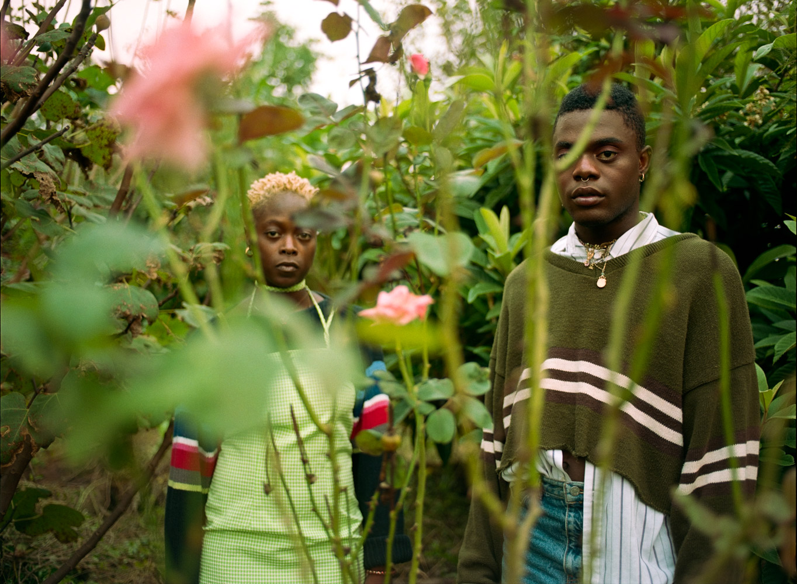

Listen to NOLA
Listen to NOLA is an interactive map
and living oral history document about a changing city.

New Orleans is becoming increasingly less familiar to the people who have called this place home for their whole lives. Through an online interactive map and physical markers placed throughout the city indicating phone numbers to call in and listen, Listen to NOLA documents the effects of displacement and development with stories from across the city. Together, let’s listen to how the deep history and psychogeography of New Orleans’ past is shaping its present.